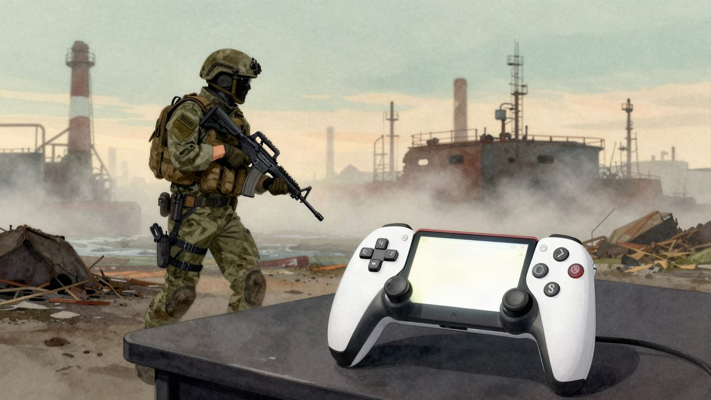

Escape from Tarkov stiže na konzole: najava početkom 2027., izlazak kasnije

Nikita Buyanov u razgovoru za InsiderGaming kaže da je razvoj konzolne verzije igre Escape from Tarkov vrlo blizu cilja. Verzija neće biti gotova ove godine, a službena najava trebala bi biti početkom 2027. Platforme, datum izlaska i cijena za sada nisu poznati.
Escape from Tarkov dobit će konzolnu verziju, a službena najava bit će početkom 2026. Nikita Buyanov u razgovoru za InsiderGaming kaže da je razvoj vrlo blizu cilja. Konzolna verzija sigurno neće biti gotova ove godine, ali je "stopostotno siguran" da će se najaviti na početku iduće godine.
Buyanov je prvi put javno spomenuo pripreme za konzole nakon sajma Tokyo Game Show 2025. Platforme, datum izlaska i cijena za sada nisu poznati.
Gotovo devet godina bete
Escape from Tarkov je u zatvorenu betu ušao u kolovozu 2016. Beta je trajala gotovo devet godina. Službena verzija 1.0 izašla je u studenome 2025., a igra se tada pojavila i na Steamu.
U tom se razdoblju igra jako proširila. Dobila je nekoliko novih mapa, desetke oružja i desetke zadataka. Izašao je i spin-off Arena, kao i verzija usmjerena na PvE.
Što bi konzole mogle donijeti
Tarkov se smatra jednim od najvažnijih naslova svog žanra, extraction shootera, i dugo je referentna točka za slične igre. Zato InsiderGaming procjenjuje da bi na konzolama mogao privući nekoliko milijuna novih igrača.
Prema istoj procjeni, PC verziju kritiziraju zbog slabe optimizacije, pa bi dio PC igrača mogao prijeći na konzole ako konzolna verzija bude dobro radila. To je za sada samo pretpostavka, jer o performansama konzolne verzije nema podataka.
Do službene najave treba pričekati nekoliko mjeseci. Tada bi trebalo biti jasnije koje će konzole igra podržavati i kada bi mogla izaći.
Izvor: MyDrivers (快科技)